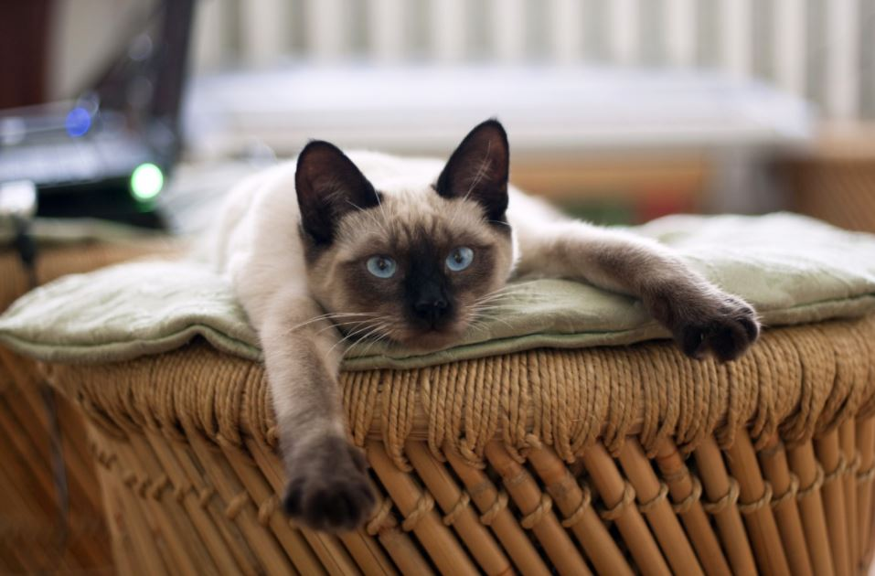

샴은 태국에서 자연 발생한 종으로 흔히 태국 왕가의 고양이 품종이라고 알려져있는 편이지만, 태국 왕실 고양이는 카오
마니(Khao Manee)라고 따로 있다. 샴 고양이가 왕실 고양이로 잘못 알려진 이유는 라마 5세가 대 영국 / 미국
외교를 펼 때 귀한 카오 마니 대신[1] 샴 고양이를 선물했기 때문이다.
엘리자베스 2세 여왕도 결혼
선물로 씰포인트 샴 고양이[2]를 선물받았는데, 그 고양이를 애지중지하여 샴을 여왕의 고양이라 부르기도 한다.
어쨌든 영국 왕실과 미국 대통령에게 선물된 샴 고양이는 유럽과 미국 전역에서 인기를 끌었으며 현재는 대중적인 고양이 품종 중 하나이다. 품종 개발역사가 비교적 짧은 고양이역사에서 그 인기때문에 꽤나 오래전인 14세기부터 품종관리가 되던 종류. 영어로 시아미즈 캣(siamese)[3]이라고 불리는데,이 시아미즈라는 단어는 태국 원산지인 생물의 이름에 대체적으로 붙이는 접두사다. siam은 타이왕국의 옛 명칭이기도 하며, 타이어로 '달의 다이아몬드'라는 뜻이다. 눈을 보면 납득된다

대체로 크림색 털이지만 점점 마치 눈에 다크서클이 낀 듯 코 주변으로 특징적으로 짙은 색의 털이 나고 귀, 꼬리, 발 등도
거뭇해진다. 장화를 신은 듯 한 외견과 사파이어 색의 눈[4]이 특징이다.
샴의 털은 온도 민감성
돌연변이로, 태어난지 얼마 안된 샴은 포인트 컬러가 옅으며 어느 정도 성장 후에 환경(온도나 몸 상태)에 따라 추우면 짙은
색으로 변하고, 더우면 옅은 색으로 변한다.
온도 외에도 대개 마른 샴의 경우 색이 짙어지고, 뚱뚱해질수록
색이 옅어진다는 설이 있는데 확인되지는 않았다. 사실 우리가 잘 알고있는 종류는 씰이나 초코 포인트(문서 상단 사진)의
샴인데, 라일락 포인트, 블루 포인트, 레드 포인트, 링스 포인트 샴의 경우는 색소가 옅어 씰, 초코 포인트에 비해 털색이
거의 차이나지 않는다.#[5]
더운 나라에서 왔기 때문에 겨울과 봄 사이에 털갈이가 적고, 단모종인데다가, 속털이 없어 평상시에도 다른 고양이에 비해 털이
덜 빠진다. 고양이의 무지막지한 털갈이를 아는 사람이라면 반려묘로서 뛰어난 장점.
물론 어디까지나 다른
고양이에 비해 덜 빠진다는 것으로, 다른 애완동물과 비교하면 많이 빠진다. 그래도 사시사철 털을 잔뜩 뿜어대는 장모종을
키우다가 샴을 키우고 나면 '이 녀석이 털이 덜 빠지는구나...'싶을 것이다. 이를테면 래그돌이라던가...
다만 위에도 언급했듯 매우 활동적인 편이기 때문에 지랄견만큼은 아니지만 간혹 그에 버금(그래도 지랄견에 비할바는 아니다)가는
행동을 할 때가 있다.[7]
그 활동성 만큼이나 살이 찐 비만 샴 고양이를 보기가 몹시 힘들 정도로 건강한
경우가 많다. 고양이는 잠이 많다고 하지만 얜 언제 자나 할 정도로 사람이 있으면 관심을 끌려고 노력하는 등 사람집사을
좋아한다.
사실상 독립심이 강한 고양이로서는 조금 특이한 성격일 정도로 사람 손 타는 걸[6] 좋아하며 개체별 특이성이 강한 개냥이. 개체에 따라 다르지만, 처음 보는 사람에게도 놀자며 들이대는 경우도 많고, 대체적으로는 온순하고 느긋한 성격이다. 무릎 위에 올라오거나 침대위에 올라와서 집사 옆에서 자려고 하는 성향도 강하다. 말을 걸면 야옹거리면서 대답하는 개체도 많은 편.
하지만 역시 샴고양이의 가장 큰 특성은 특유의 울음소리로 다른 고양이와 확연히 차이가 있는 소리를 내며 수다스러운 편에 속한다. 보통의 고양이가 '야옹' 한다면 샴고양이는 우웅? 꺙꺙? 하는 식의 소리를 내며 고양이서적에도 샴울음소리는 따로 다루기도 한다. 개냥이 기질이 강한 샴고양이는 이런 울음소리로 반려인의 관심을 끌기 좋아하고 대화를 하는 듯한 느낌을 주기도 한다. 울음소리가 큰 편에 속하며 굉장히 시끄러울 때가 있다. 주의해야할 부분.